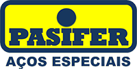
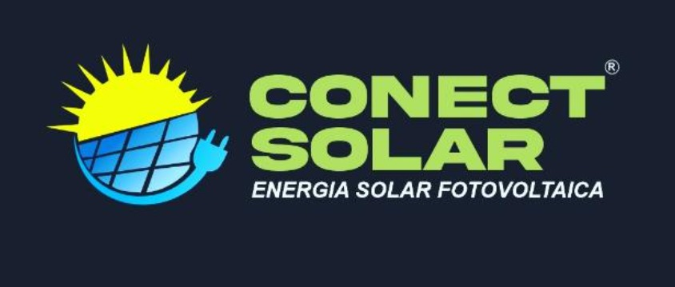

Redução de exposição a riscos
Identificação de perigos, avaliação de riscos e apoio à implementação de controles adequados à realidade operacional.
A GW SEGTRAB integra Segurança do Trabalho, Meio Ambiente e eSocial para organizar a conformidade, fortalecer a prevenção e apoiar decisões mais seguras na sua operação.
Os 26 anos referem-se à experiência profissional apresentada pela especialista responsável na seção de equipe.
A atuação é direcionada aos problemas que mais impactam a continuidade, a organização e a segurança das operações.
Identificação de perigos, avaliação de riscos e apoio à implementação de controles adequados à realidade operacional.
Estruturação de programas, laudos, evidências, registros e controles para facilitar a gestão e o acompanhamento.
Integração das informações ocupacionais e suporte técnico para melhorar a consistência dos eventos de SST.
Avaliação de pendências, organização de evidências e definição de planos de ação antes de auditorias e fiscalizações.
Capacitações técnicas e comportamentais conectadas aos riscos, às atividades e às responsabilidades de cada equipe.
Rotina de acompanhamento para tratar pendências, priorizar ações e apoiar a melhoria contínua.
Selecione uma solução para conhecer a proposta de atuação. O escopo final deve ser definido conforme o porte, o segmento, os riscos e as necessidades da empresa.
Uma opção para empresas que precisam de continuidade, acompanhamento das pendências e suporte técnico ao longo do mês, sem limitar a atuação a entregas isoladas.
Para estruturar controles fundamentais e acompanhar prioridades.
Para empresas que precisam integrar documentos, inspeções e acompanhamento.
Para operações com múltiplas demandas, unidades ou requisitos de gestão.
Podem gerar retrabalho e dificultar a gestão das obrigações.
Enfraquecem evidências de capacitação e prevenção.
Mantêm pendências abertas e controles apenas no papel.
Dificulta a participação das equipes na prevenção diária.
Conheça os profissionais apresentados pela GW SEGTRAB.
Especialista em SST e Meio Ambiente
Com 26 anos de experiência no mercado, atua em análise comportamental, capacitação, desenvolvimento de lideranças e preparação empresarial para auditorias dos sistemas de gestão ISO 9001, 14001 e 45001.
Técnico especialista em Gestão de Riscos
Atuação em indústrias de grande porte, elaboração de laudos relacionados à insalubridade e periculosidade e formação técnica em Normas Regulamentadoras.
Técnica em Segurança do Trabalho e Gestão de Terceiros
Atua com gestão e homologação de terceiros em plataformas corporativas. Graduanda em Psicologia, contribui para treinamentos que conectam requisitos regulatórios, comportamento e percepção de risco.



Converse com a equipe da GW SEGTRAB para definir prioridades, escopo e próximos passos para SST e Meio Ambiente.